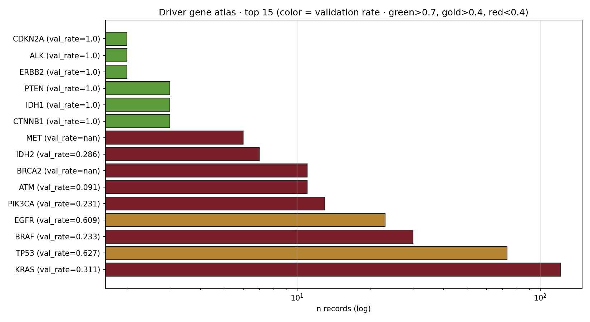

Lumenix · Driver gene atlas · 2026-05-08
Cancer Driver Gene Atlas
Per-driver-gene neoantigen landscape. KRAS dominates the corpus (n=121, 27 unique peps); TP53 is the second-largest with high validation rate (62.7%). BRAF has only 30 records (mostly thyroid). EGFR, PIK3CA, IDH1/2 are smaller but well-validated.
30+driver genes mapped
KRAStop driver (n=121)
62.7%TP53 val rate
23.3%BRAF val rate
27unique KRAS peps
Top 15 driver genes

Figure · Driver gene atlas. Color = validation rate · green > 0.7, gold > 0.4, red < 0.4.
Per-driver detail
| Gene | n records | unique peps | n_pos | n_neg | val rate | top mutations |
|---|
| KRAS | 121 | 27 | 37 | 82 | 31.1% | G12D, G12V, G13D |
| TP53 | 73 | 33 | 42 | 25 | 62.7% | R175H, F176, Y114 |
| BRAF | 30 | 6 | 7 | 23 | 23.3% | V600E |
| EGFR | 23 | 11 | 14 | 9 | 60.9% | L858R, T790M, F392 |
| PIK3CA | 13 | 5 | 3 | 10 | 23.1% | R1047, K365, H1047R |
| ATM | 11 | 2 | 1 | 10 | 9.1% | S2408L |
| BRCA2 | 11 | 2 | 0 | 11 | 0% | V1745, L1039 |
| IDH2 | 7 | 4 | 2 | 5 | 28.6% | I269M, D215 |
| CTNNB1 | 3 | 2 | 2 | 0 | 100% (n=2) | K335I |
★ Insights:
• KRAS: largest driver corpus (121) — perfect target for shared-vaccine strategy. G12D dominates.
• TP53 R175H: highest validation rate among large-corpus drivers (62.7%) — TP53 hotspot vaccines are computationally promising.
• EGFR L858R / T790M: 60.9% val rate, well-validated for lung cancer.
• BRAF V600E: only 30 records, 23% val rate, almost all melanoma — thyroid V600E records are very few (n=3).
• BRCA2 / ATM: DNA damage response genes have very low validation rates — likely poor neoantigen targets despite being driver-classified.
Strategic implications
- Public-vaccine candidates: KRAS G12D, TP53 R175H, EGFR L858R, BRAF V600E.
- Private-neoantigen candidates: rare passenger mutations (out of scope of this corpus).
- Synthetic-lethality targets (ATM, BRCA1, BRCA2): not strong neoantigen candidates → use PARP inhibitor pathway instead.
◀ Pan-cancer atlas · Master index · ▶ HLA atlas